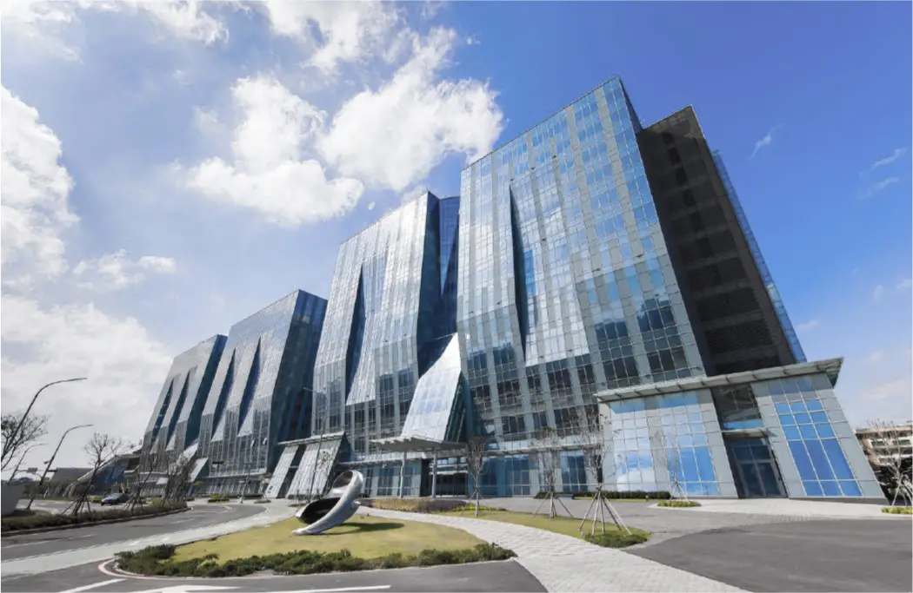

人生的第一場勝利
台元 ╳ 昌益 科園首席
EVERY SUCCESSFUL PERSON HAS
THEIR OWN STARTING POINT
每位成功人士
都有屬於自己的起點
人生的第一場勝利，會成就一雙翱翔未來的翅膀與無限可能。新竹是一座科技新城，作為科技人的嚮往，從起點到通往世界舞台的道路，每一步，都將有家人與愛相伴同行。在聚焦城市前景之前，先看見內心蘊含的初心之美。
科技競速首位 掌握致勝關鍵
中正西路商圈 ╳ 科技雙園引擎


REGIONAL
ADVANTAGE
TOP ENTERPRISES SETTLE
騎車速抵 12萬坪IC重鎮
台元科技園區
擁有超過300家國內外頂尖企業進駐的台元科技園區，離家騎車四分鐘。園內廠辦全新落成，科技門面大器輝煌，為預計移入人才提供豐沛就業機會。

LIVE
EFFICIENTLY
CALM WORK
散步上班 從容打卡
昌益科技產發園區
為自己安排早晨時光，300米散步距離抵達昌益科技產發園區，掌握比他人更多的自由時間，為自我人生目標制定高效率計畫。

RESIDENTIAL
CORE
WELL-EQUIPPED COMMUNITY
中正西路富饒聚落
竹北車站緊鄰其側
竹北火車站旁中正西路隨軌道經濟成住宅聚落核心，沿街小吃林立、生鮮百貨、連鎖手搖。郵局、市民活動中心、市公所等行政機關座落，步行享有便利服務。竹北國小、竹北國中與義民高中等教育機構皆設立於此。
EASY
COMMUTING
CONVENIENT TRANSPORTATION
挹注20億台一線替代道路工程
30年願景實現 引領繁榮大新竹
台一線替代道路第一期完工後，竹北西區可上高架橋、過頭前溪抵達新竹市區，銜接台68線東西向快速道路，亦可抵達新竹科學園區，減緩市區尖峰時段所致交通瓶頸。
Information
基本資料
-
投資興建
鴻奕建設股份有限公司、
峻勝建設開發股份有限公司 - 基地位置 新竹縣竹北市國盛街131號旁
- 使用分區 第二種住宅區
- 基地面積 約364.07坪
- 建築規劃 卓玲建築師事務所
- 公設規劃 珩荷空間設計有限公司
- 防水規劃 DAISIN 大信防水
- 規劃戶數 住家65戶
- 樓層規劃 14F/B3
- 坪數規劃 21-36坪
- 建築執照 112府建字第00017號
- 廣告代銷 海宇國際股份有限公司